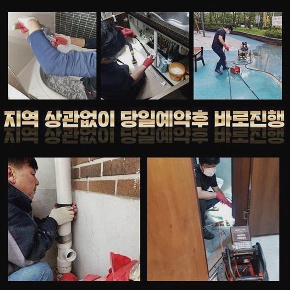
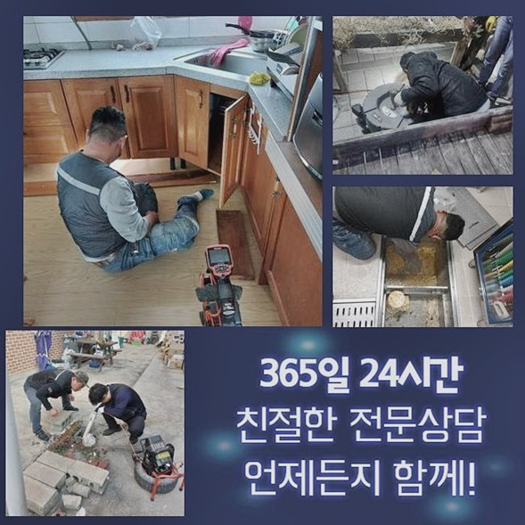
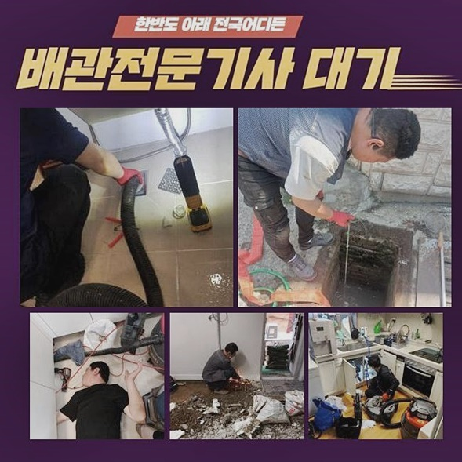
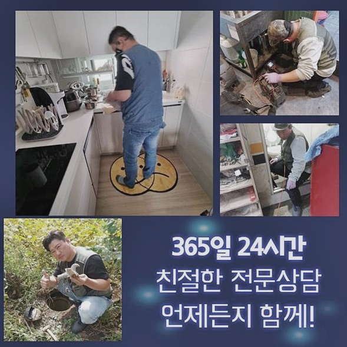
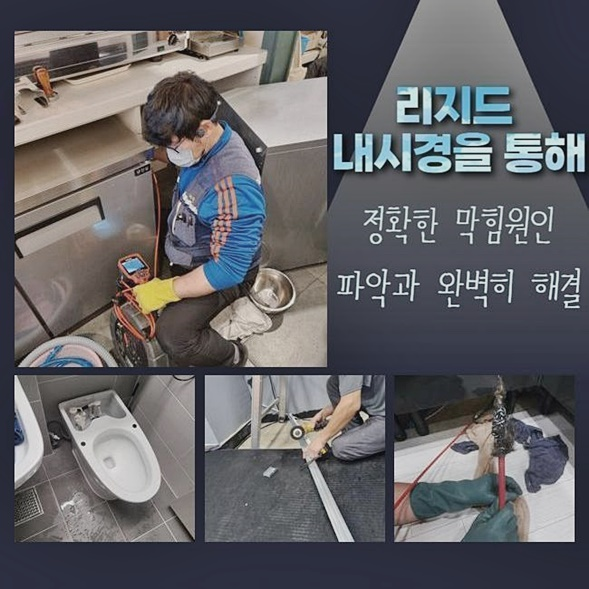
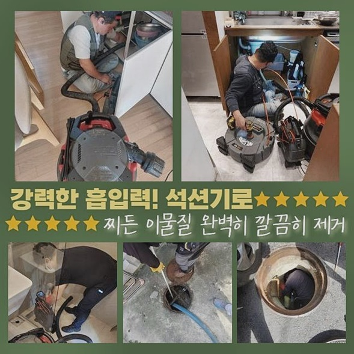
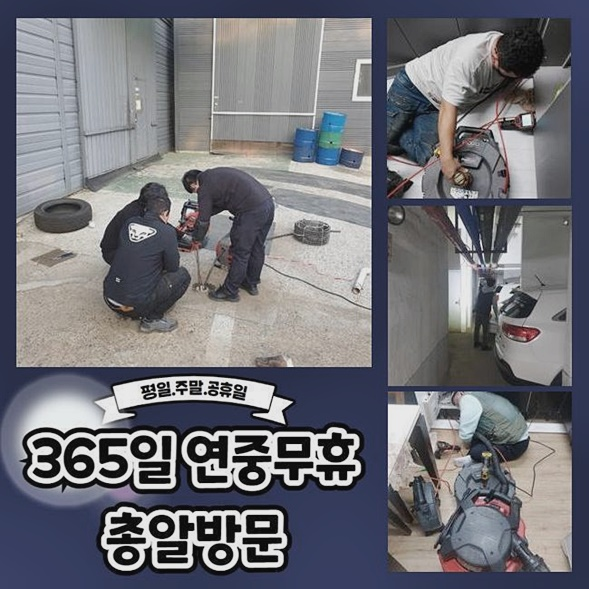

🏠 종로 견지동욕실뚫음 낙원동 배수구뚫기 설비업체
용인 원동 배관막힘 전문 시공 후기

📋 작업 개요
- 위치: 용인 원동, 원동, 용인
- 서비스 유형: 배관막힘, 맨홀막힘, 누수수리, 역류해결, 뚫는업체, 배관청소, 고압세척, 악취차단
- 작업 일시: 2024. 10. 1. 18:23
- 업체명: 하수구수사대 (010-5615-2118)
🔍 문제 상황
종로 견지동욕실뚫음 낙원동 배수구뚫기 설비업체
하수관 고장이 생긴다면 여러가지로 애로 사항이 촉발하는데요
배수시스템이 망가졌으니 설거지 등을 못할 것이며 욕실도 못 사용하게 돼버리기도 한답니다
해당되는 기초적 부분들은 아주 잠깐 이용이 불가해도 많은 불편리를 일으킬수 있어요
또 그러한 장애증세가 근처의 세대원에까지 피해를 주는 경우도 많아요
그땐 생각하지 못하였던 금전적인 배상이 요청되기도 합니다
그렇기에 관로의 트러블이 나타났다면 망설이지말고 즉시 수리할 기술자를 수소문해서 정리하셔야 돼요
개문과정을 자발적으로 시행하겠다고 판단한 후 호방하게 시도하실수 있으나 예상한 것과 같이 어렵답니다
과정중에 도리어 관로에 데미지를 발생시켜서 물의 누설이 나타나거나 인접 설비가 고장나면서 상상하지 못한 시공으로 비용지출이 늘수도 있겠죠
월초에 내방간 처소의 의뢰자께선 무리해서 고쳐보려 단행하다 누수까지 이어진 상황도 있었답니다
공연스레 만지시다가 형편이 더욱더 까다로워지기도 하므로 사태가 심중하다고 판단이 들면 인력을 찾아서 진단받으시는 게 합당합니다
금번 방문 장소는 1층주택이었고 촉급하게 의뢰를 받은후 이동하였어요
의뢰인분이 휴일에만 사용하고 있으셨고 주차장쪽에 물샘이 생겼다 하셨죠
아무도 이용하지 않았고 일주일만에 내방하였더니 물이 역류중이라 너무 놀라신 상황이었죠
손님분에게 관로 어딘가에서 문제가 생겨난것으로 보인다 이야기하였더니 시간이 얼마나 발생되는지 궁금해하셔서 시간과 견적금까지 다 설명드렸고 곧장 작업해달라고 요청하셨기에 작업에 돌입하였어요

🔎 원인 분석
💡 전문가 진단: 정밀 진단 장비를 사용하여 슬러지의 고착 여부를 판명하고 타격/세척 작업을 실시했습니다.
배수관 관련하여 기억해야되는 부분은 차단현상은 상층부에서 발생하기도하고 배관의 매립구조에 의하여 하부에서 파열되면서도 일어난다는 거죠
그러므로 문제를 추측하여 시공해선 바람직한 마무리를 바라기 힘겹죠
그렇기 때문에 정교하게 단초를 찾아 대책을 세워야 하죠
그저 구멍을 낸다고 처리되는게 아니예요
그리하면 잘못된 지점을 작업하여 몇주 못가서 재차 배관클리닝 업무를 해야 할 수 있죠
그러므로 면밀한 점검이 필수라는 것입니다
저희측에서는 소지한 내시경cctv를 통해서 내부 상황을 파악하였어요
직관적으로는 유분기가 많다고 여겨져서 여쭤보았더니 저번주 식기세척을 진행할때에 별다른 처리없이 하수관으로 흘려보냈다고 하셨네요
저는 그즉시 바로 이부분이 고장의 주된 이유라고 추측할수 있었죠
고객께서는 응당 기름기는 액상이고 끓인 물을 사용해서 닦았기에 문제가 생기지 않을거라 여기셨다고 하셨죠
대다수가 유분찌꺼기 등은 하수관에 부어도 안 막힐거라고 인식하고 있는데요
이것은 실제와 간극이 크며 되레 차단의 메인 동기가 될수 있어요
기름성분은 끓을 때에 유동성을 갖죠
하지만 난점은 상온에서는 단단하게 고체가됩니다
그게 상존하면서 기타 잔재들과 뭉쳐버리면서 점차적으로 크기게 커지고 결론적으로 관로를 막기 때문에 이곳처럼 물의유출이 나타나는 겁니다

🔧 작업 과정
그러하기에 이 주택처럼 정기적인 소제를 피하고 싶으시다면 일상중에 이물질 등을 하수관으로 버리지 않는게 합당합니다
이번에 방문했던 사장님께도 해당 내용을 이야기하였더니 잊지않고 적용하겠다고 하시더라고요
틈틈이 내시경cctv로 조사하면서 노폐물들이 제대로 없어지는지 파악하였죠
물론 이렇게 유분찌꺼기를 내렸다고해서 자동적으로 배관막힘이 생기는 것은 아니랍니다
각종 이물질이 적층을 이루면서 기름성분들과 뭉쳐져서 물이 안내려가게 되는거죠
온수를 부지런하게 부어 장애를 방예하는 경우도 있으나 본질적인 해결은 된다고 보기 어려워요
그리고 시중의 화학제품도 관에 오랜시간 누증된 침전물을 온전히 제거하기는 힘들다고 봐야죠
또 이물파쇄 기계를 활용해서 단단해진 석회질들을 없앴고 기타 파이프 안쪽에 뭉쳐있던 머리카락 뭉치와 석회성분들도 제거했어요
수년간 누증된 이물들이 엄청나다는걸 인식할수가 있었답니다
촬영기기를 살피면서 꼼꼼히 막힘 현상을 처치하여 고인물이 점차 사라졌는데 속시원히 통수가 된다고 보기 어려워요
이것은 밖에 있는 배수시설에도 트러블이 발현되었다는 증거였어요
세대 실내에서 처치할 것들은 마무리했기에 바깥쪽만 처치하면 마감될 걸로 보였어요
고객께 이것에 대하여 안내드렸고 야외로 나가서 맨홀뚜껑을 열고 조사하였어요
저희 예측대로 내측에 이물질이 가득차 있었죠
작업 준비를 하고 고압세척 장비를 활용하여 신속히 소쇄하였답니다
그나마 실내에서 제거하였기에 조속히 끝마칠 수 있었어요
이제 관로가 뚫리면서 쏜살같이 물이 빠졌어요
탁수가 없어질때까지 지속적으로 기기를 가동시켜 소제하였고 5분정도 지난뒤 깨끗한 수돗물이 배출되었죠
깨끗한 수돗물이 나와야 안쪽에 이물들이 청소되었다는 사실을 뜻하므로 매우 중요하다고 볼수 있어요
기름불순물도 해당되는 방책으로 깔끔하게 처리해 냈어요
이것들은 맨 나중에 배출된 노폐물인데 해당 물질 외에도 상당한 용량이 정리되었죠
본 현장에서 파이프를 통수하면서 거듭 정례적인 점검은 물론이거니와 일상적으로도 간수를 잘해나가야 하는 사항을 곱씹었으며 그 내용을 의뢰인께도 설명드렸답니다
의뢰자께서도 이물들만 약간 빼버리면 마무리될것으로 간주하셨는데 형편이 커져서 좀 놀랐다 말하셨는데 뚫린 모습을 보시고는 안심말했어요
이제부턴 메인 하우스가 아니라 하여 방치할게 아니고 정기적으로 클리닝을 해야하겠다고 말하시더라고요


✅ 작업 완료
반대 방향으로 누출된 찌꺼기들로 인해 오손된 부근을 깨끗하게 치웠어요
흔히 하수관막힘이 일어나면 해당 업무만 행하고 귀가하는 것으로 생각하지만 저흰 보시는바와 같이 뒷정리까지 단단히 실시하고 있답니다
거기에 더해 주변 설치물에도 손상을 주면 안되므로 그에 대한 사안도 철저히 신경쓰고 있답니다
의뢰자께서는 처음엔 황당해하셨으나 우리팀의 완벽한 결과물을 목견하고는 흡족해하셨어요
저희팀은 문제상황이 포착되었다면 휴일이라고 하여도 곧바로 이동해서 작업합니다
이런 고장은 최대한 신속히 처리해야 형편이 심각해지지 않았답니다




⚠️ 베란다 누수 및 방수 관리 방법
- ✅ 비가 많이 올 때 창틀 주변이나 아래층 천장에 얼룩이 생기는지 정기적으로 확인해 보세요.
- ✅ 우수관 주변 실리콘 마감이 들뜨거나 깨진 틈새가 있는지 손상 여부를 수시로 체크하세요.
- ✅ 베란다 바닥 타일의 줄눈(메지)이 소실되면 그 틈으로 물이 침투하여 누수가 유발됩니다.
- ✅ 누수 의심 증상 발견 시 방치하면 아래층 손실이 커지므로 즉시 전문가의 진단을 받으십시오.
💡 핵심 정리
- 확실한 장비 작업(내시경 점검 및 샤프트 스케일링)으로 원인을 뿌리 뽑습니다.
- 작업 후 1년 이내에 동일한 부위 재발 시 100% 무상 A/S 서비스를 보장합니다.
- 서울 · 경기 · 인천 전 지역에 24시간 언제든 긴급 출동할 수 있도록 항시 대기 중입니다.
❓ 자주 묻는 질문 (FAQ)
🚨 용인 원동 배관막힘 문제로 고민이신가요?
정확한 원인 진단과 확실한 시공으로 재발 없는 해결을 약속드립니다.
24시간 긴급 출동 | 서울 · 경기 · 인천 전지역 | 1년 내 재발 시 무상 A/S